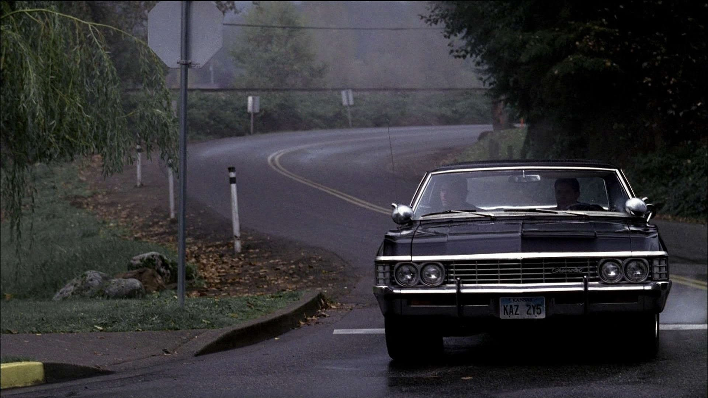
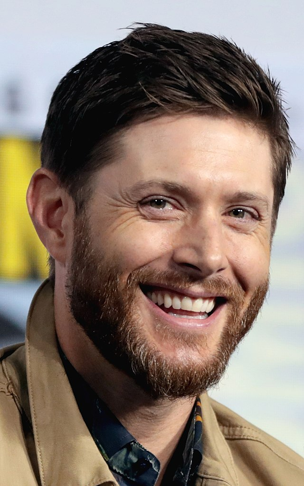
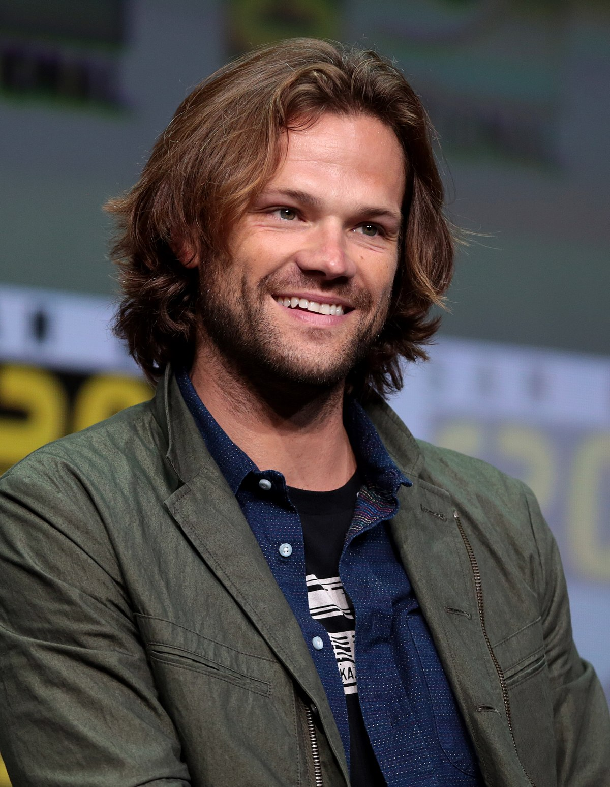

Tudo sobre Supernatural
Supernatural (Sobrenatural) é uma série de televisão estadunidense de fantasia sombria e urbana criada por Eric Kripke, produzida pela Warner Bros. Television em parceria com a Wonderland Sound and Vision, que estreou em 13 de setembro de 2005 na The WB Television Network, e depois tornou-se parte da programação da The CW, finalizando em 19 de novembro de 2020. A série narra a história de dois irmãos, Dean Winchester e Sam Winchester , interpretados respectivamente por Jensen Ackles e Jared Padalecki, que caçam demônios, fantasmas, monstros vampiros e outras criaturas sobrenaturais no mundo.
Kripke estava desenvolvendo Supernatural há quase dez anos, na sua ideia original, os Winchesters não existiam. A história se baseava em jornalistas que relatavam em suas notícias acontecimentos sobrenaturais. Como a The WB Television Network, emissora original do programa, não aprovou a ideia, Kripke reformulou o conceito da série e teve a aprovação. Os produtores executivos originais são Kripke, McG e Robert Singer ( o mesmo nome do personagem da série).
As filmagens ocorriam em Vancouver, no estado da Colúmbia Britânica, no Canadá. Seu episódio piloto foi visto por mais de 5,69 milhões de telespectadores, e o índice de audiência dos quatro primeiros episódios levou ao canal The WB produzir uma primeira temporada completa de 22 episódios. Originalmente, Kripke planejou a série para três temporadas, mas posteriormente expandiu para cinco. A quinta temporada, que estreou em 10 de setembro de 2009, encerrou o enredo principal da série. No entanto, devido ao aumento da audiência da quarta e da quinta temporada, a The CW decidiu continuar a exibição de Supernatural. Em 31 de janeiro de 2019, a emissora The CW renovou a série para uma décima quinta e última temporada, contando com 20 episódios.
A série chegou ao seu episódio final no dia 19 de novembro de 2020. A temporada final teve aceitação mista por parte do "fandom".
A série é até hoje a mais duradoura da The CW e a última série das extintas emissoras The WB e UPN a ser transmitida pela atual CW.
No Brasil, a série foi exibida de 2006 a 2018 pelo SBT e é reexibida desde então pelo canal pago Warner Channel.
Elenco
| Artista |
Personagem |
Temporada |
| 1 |
2 |
3 |
4 |
5 |
6 |
7 |
8 |
9 |
10 |
11 |
12 |
13 |
14 |
15 |
Jared Padalecki |
Sam Winchester |
Regular |
| Jansen Ackles |
Dean Winchester |
Regular |
| Katie Cassidy |
Ruby |
|
Regular |
|
| Genevieve Cortese |
|
Regular |
|
Regular |
|
Convidada |
| Lauren Cohan |
Bela Talbot |
|
Regular |
|
| Misha Collins |
Castiel |
|
Recorrente |
Regular |
Rec |
Regular |
| Mark A. Sheppard |
Crowley |
|
Rec |
Regular |
|
| Mark Pellegrino |
Lucifer |
|
Rec |
|
Rec |
|
Recorrente |
Regular |
|
Convidado
Especial |
| Nick |
|
Part |
|
Regular |
|
| Alexander Calvert |
Jack Kline |
|
Part |
Regular |
| Belphegor |
|
Regular |
Criação e concepção
Antes de levar Supernatural para a televisão, o criador Eric Kripke tinha desenvolvido a série durante quase dez anos, tendo sido fascinado por lendas urbanas desde que era criança. Apesar de ter pensado em Supernatural como um filme, passou anos tentando vender a ideia num formato de série de televisão. O conceito passou por várias fases antes de se tornar no produto final, e mudou de uma antologia sobre o paranormal para um grupo de jornalistas que viajavam pelo país numa van "lutando contra demônios em busca da verdade".Kripke queria que fosse uma série na estrada por achar que essa era "a melhor forma de contar essas histórias porque é puro, despojado e incomparavelmente americano... Estas histórias existem em várias pequenas cidades espalhadas por todo o país, e faz muito mais sentido chegar e ir embora destas histórias dirigindo". Devido ao fato de já ter trabalhado anteriormente com a WB com a série Tarzan, Kripke teve a oportunidade de propor ideias de programas ao canal, e aproveitou a oportunidade para Supernatural. Porém, o canal não gostou da sua ideia dos jornalistas, por isso Kripke decidiu que os personagens principais eram dois irmãos e que eles são de Lawrence, no Kansas, devido à proximidade da cidade ao Stull Cemetery, um local famoso por suas lendas urbanas.
Quanto ao nome que daria aos protagonistas, Kripke decidiu que se chamariam "Sal" e "Dean" como homenagem ao romance On the Road, de Jack Kerouac. Contudo, achou que "Sal" não era o melhor nome para um personagem principal e mudou-o para "Sam". Originalmente, o último nome dos irmãos seria "Harrison" para fazer referência ao ator Harrison Ford, visto que Kripke queria que Dean tivesse "a presunção ousada e imprudente de Han Solo". Porém, havia um Sam Harrison que morava no Kansas, por isso o nome teve de ser mudado por razões legais. Para combinar o seu interesse na Winchester Mystery House e o seu desejo de dar um aspeto de "Western moderno" à série, Kripke deu-lhes o sobrenome de "Winchester". Contudo, também isto criou um problema. O nome original do pai de Sam e Dean era "Jack" e também havia um Jack Winchester no Kansas, o que forçou Kripke a mudar o nome do personagem para "John".
Quando era mais jovem, Kripke gostava de ver séries em que o carro era um símbolo da mesma, como é o caso de The Dukes of Hazzard e Knight Rider. Isto levou-o a incluir um em Supernatural. Originalmente queria que o carro fosse um Mustang de 65, mas o seu vizinho convenceu-o a mudá-lo para um Impala de 67, uma vez que "você não pode colocar um cadáver no porta-malas" e porque "queria um carro que, quando para num sinal, faça as pessoas trancar as portas". Kripke disse, "É o Rottweiler dos carros, e eu penso que isso dá mais autenticidade aos fãs de carros por causa disso, porque não é um carro bonito. É um carro agressivo, musculoso, e eu acho que é a isso que as pessoas reagem, porque se encaixa tão bem no tom do nosso programa".

Protagonistas
Para interpretar os dois personagens protagonistas de Supernatural, os irmãos Sam e Dean Winchester, a escolha deu-se aos atores Jared Padalecki e Jensen Ackles, respectivamente. Kripke queria o mais semelhante o possível a Luke Skywalker e Han Solo de Star Wars.
Padalecki conhecia os produtores executivos McG e David Nutter, os primeiros a convencê-lo para fazer um teste para o papel de Sam. O ator tornou-se interessado no papel graças ao seu gosto por séries de terror, como The X-Files e Twilight Zone, que ele achou semelhante a Supernatural. Ele também estava animado para interpretar "o herói relutante", comparando Sam a personagens como Neo de Matrix e Luke Skywalker de Star Wars.
Ackles foi originalmente convidado por Nutter para fazer um teste para o papel de Sam, mas o ator preferiu o personagem de Dean após ler o roteiro.


Atores Jensem Ackles e Jared Padalecki
Música
A série apresenta uma síntese de incisão orquestral, apesar dos instrumentos reais, como violões e violoncelos serem usados raramente. Ao contrário de outros programas de televisão, Supernatural apresenta dois compositores: Christopher Lennertz e Jay Gruska. Eles escrevem temas para os seus próprios episódios e personagens e, trabalham um com o outro se há sobreposição entre os episódios. Enquanto canções originais são usadas em todos os episódios, um outro aspecto importante da série é o "Rock Clássico", que o criador Eric Kripke ameaçou encerrar por conta do elevado preço para adquirir direitos autorais. A maioria das canções é da coleção particular de Kripke, e uma de suas bandas favoritas, o Led Zeppelin, seja muito caro para usar, optou-se por bandas como Blue Öyster Cult e AC/DC, em mais de uma ocasião e Bon Jovi em apenas uma ocasião. Várias músicas são normalmente utilizadas ao longo de cada episódio, embora Kripke prefira manter uma linha fina entre a orquestra e as canções utilizadas. Por vezes Lennertz e Gruska são obrigados a escrever seções curtas de Rock para preencher lacunas de quinze a vinte segundos, devido ao alto custo para adquirir direitos autorais de músicas. Normalmente, no último episódio de cada temporada, a música "Carry On Wayward Son", de Kansas, é tocada no início.